Why do you do this to yourself?
So, some of our friends ask us why we love tormenting ourselves with long, strenuous activities.
It is not like we grew up doing this stuff; it came naturally. We report that it comes from a feeling of achievement associated with accomplishing something different from regular. Some childhood trauma requires us to love our own selves a little less than average and we need to occasionally remind ourselves of our worth by doing something a bit 'stupidly' worthwhile. All of this coincides with something more regular — the love for nature and travelling.
Another thing is that we are grossly underpaid researchers aka PhD students, which makes extravagant four-wheeled travel out of reach, not to mention that none of us were capable enough to get a license in our four years of stay in Canada. Finally, the climate of this part of the world is so unforgiving for the majority of the year that the few days of brilliant sunshine appear too few to make the most of.
This completes the list that justifies our ordeal. You might find some of them unreasonable, but I am lucky that at least one person thinks similarly. My roommate and partner in greatness. Hi five, Harman!
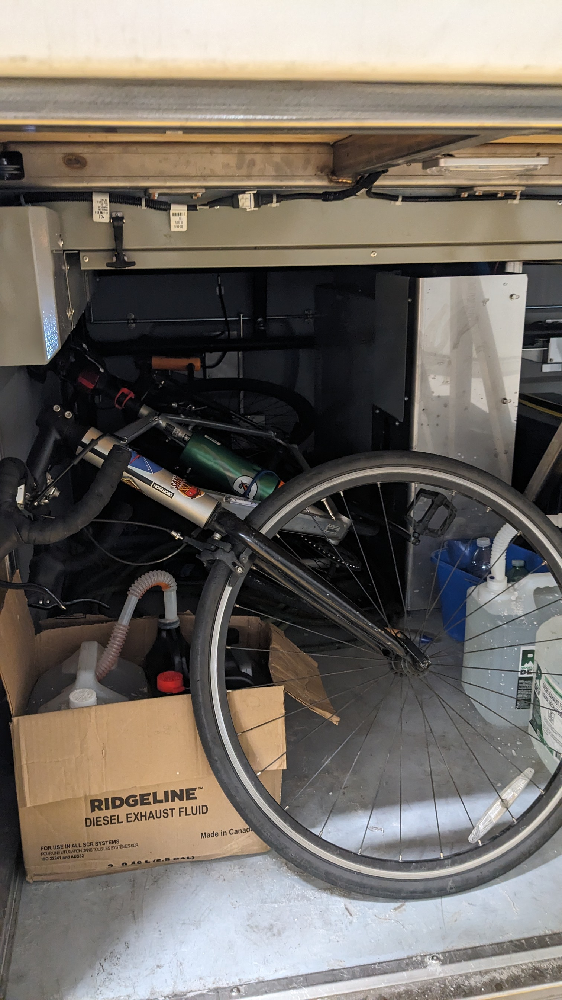
Flix bus the saviour!

After finishing some business with the cops
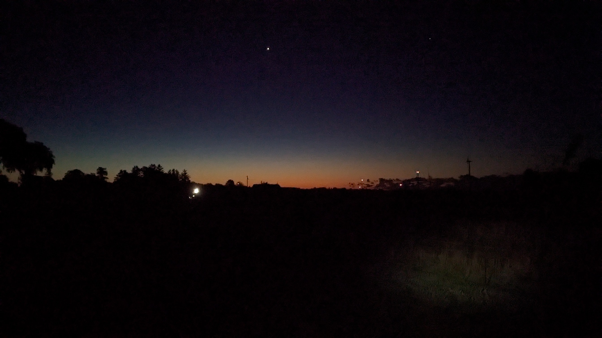
The first sunrise
Learning from previous mistakes : )
Last time we attempted something similar, we ended up having to leave our bikes in a different city for about a month! We had bike-packed 300 km from Toronto to Kingston and there was no way to bring our bikes back. It was only much later that we found Flix buses allowing large luggage bookings which fit the dimensions of our bikes.
This time we wanted to take the risk in the beginning itself such that we did not have to leave our bikes in some distant city. We booked Flix bus tickets to Chatham Kent, some distance east of Windsor, put our bikes in and slept off.
They dropped us 15 minutes ahead of time at 3:20 am. It was end of August and the air had only started getting cooler — 8 degrees Celsius, read the phone screen. After putting on some warm layers and gloves we took off on the first leg of the journey. The goal was 200 km on the first day and, unlike last time, we had Airbnbs booked, which meant there was no flexibility in terms of the distance that had to be covered.
As we got out of the gas station on to the road, the scene turned completely dark. With our bike lights on, we started navigating through what looked like fields on either side. But there was something else which made the experience different from a regular ride in the dark. When we looked at the horizon we saw a bunch of red lights shine and go off in sync, as if they were some new kind of fireflies! The synchronisation was so perfect that it stirred an eerie feeling. It was only a little while later, seeing one of those lights up close, that we realised they were wind turbines. Windsor and its nearby areas are known for wind farms and we were biking through them.
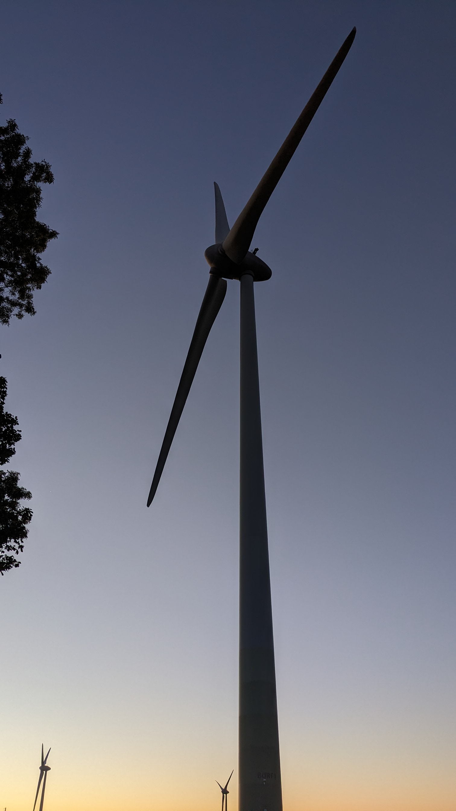
Giants
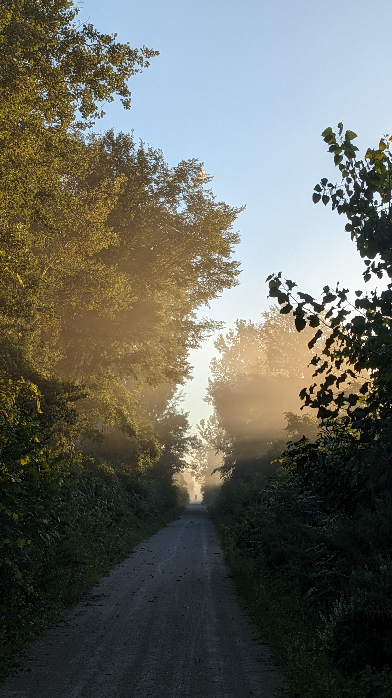
Perspective
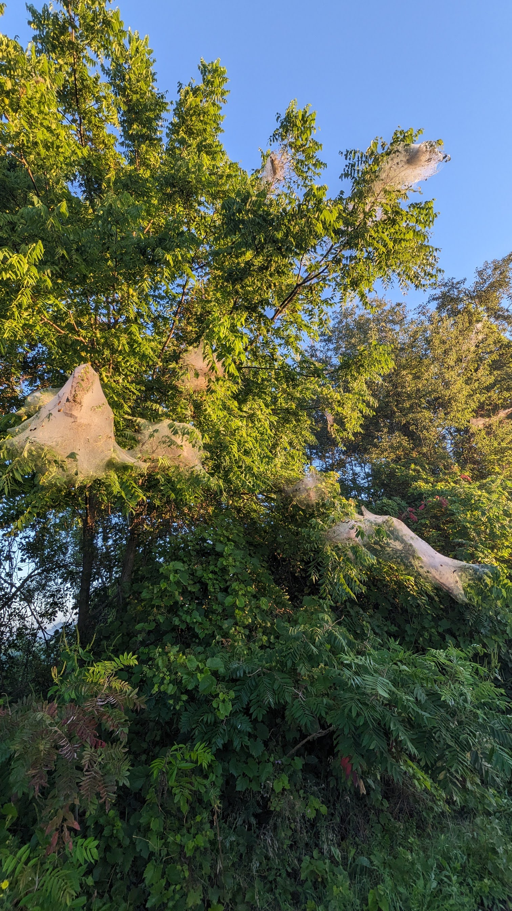
Not spiders
Surprise!!
Five minutes into the ride, the bikers' nightmare happened. We had just switched from paved roads to a gravel one when my bike felt a little more bumpy than usual. I got off to check — and yes, my rear tyre was flat, flat as most JWST spectra (only for exoplanet enthusiasts). It had not even been 5 km and we had 195 more to go. I hoped that the small hand pump we were carrying would at least inflate it enough to stand the distance to the nearest Tim Hortons where we could change tubes or fix it with a patch. Just to remind ourselves, it was pitch dark and we had to work with our head lamps.
At the very moment when we stopped, a bunch of dogs noticed our flashing lights and faint voices, came out to the porch of their house and started barking like anything. We decided to move a little further ahead into a grove of trees to eliminate the stimulus and started working on the flat. I pumped the tube up to whatever my arms allowed. The nearest Timmy's was 20 km, and we got ourselves mentally prepared to stop 7–10 times on the way, imagining the worst. You wouldn't believe me if I said it, but I did not have to touch the pump another single time in the 420 km we biked! And we thanked God several times for that.
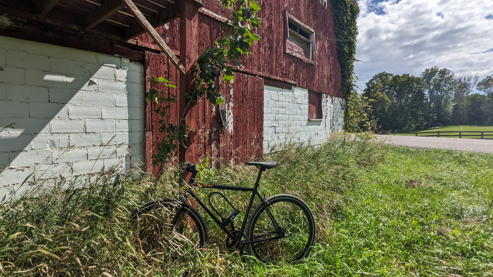
My butterbike in the wild
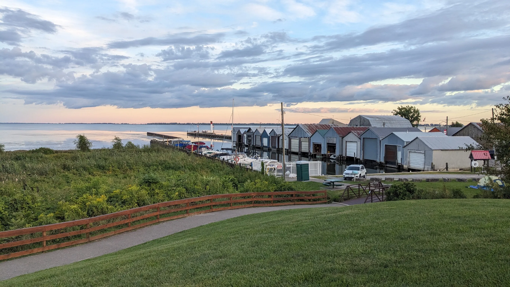
Some port town — port Royal?
An even bigger surprise!!
Riding with Harman, I have realized that we bring complementary skills to the team. While he is mostly methodical and prudent, I am usually reckless and bold — occasionally these roles exchanging. In general, Harman is the navigator but he lets me lead.
In this case, it was about how careful we should be when biking on bigger roads in the dark. Harman was more cautious of vehicles coming from the opposite direction. I was more cautious of vehicles in my lane coming from behind — if they could not see us, they'd just ram into us and send us flying off to space like Team Rocket after every failed mission.
After the first 10 km, we were on a big road and there was a car coming up behind us. We both did opposite things. Harman sped up and I came to a halt, and in a matter of a few seconds we were beyond each other's visual or aural reach. Surprisingly, the car slowed down as it approached me and eventually came to a stop right next to me. If not for the dashing red and blue colours on the vehicle, I think I would have just started shouting for help! But the colours brought a different kind of spine-chill. It was a police vehicle.
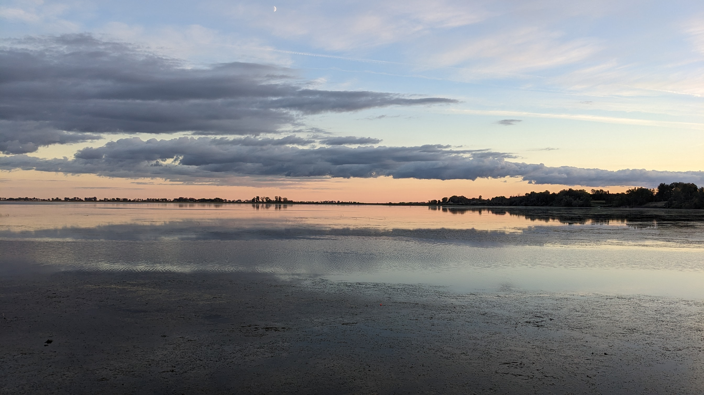
Sunset by Lake Erie
The encounter!
Then started a round of interrogation. I think our only saving grace was that we had helmets and really looked like bikers even though our biking gear is only about 40% of what other people on the roads have. Nothing else we communicated verbally seemed to make sense to the officers. Where are you from? Why are you here in the middle of the night? Names? Date of birth? By then, Harman had biked back to the location. The officers told us that there had been recent burglaries in the area, and someone had informed them of people talking in the middle of the night on the road. We understood it was the family with the dogs.
We tried explaining that we are PhD students in Toronto and had a plan of biking along Lake Erie over the next three days with Airbnb reservations along the way. From their expressions we concluded that they did not make much sense of what we were up to. I think what we were doing does not make much sense to regular people anyway, but the officers were nice enough and pretended to understand. What are two brown people doing in the middle of nowhere in the middle of the night riding relentlessly on bikes? They confirmed that we were not in any trouble and then let us go, asking us to contact them if need be.
It was probably a bit too much to ask for, but I really wanted to get a selfie with the officers!
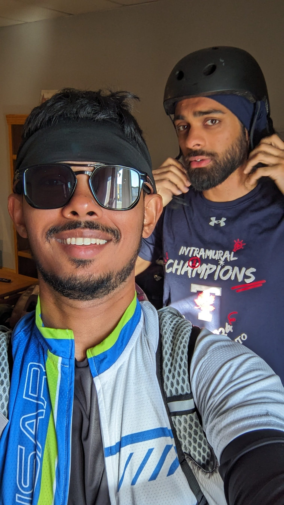
Selfie 101
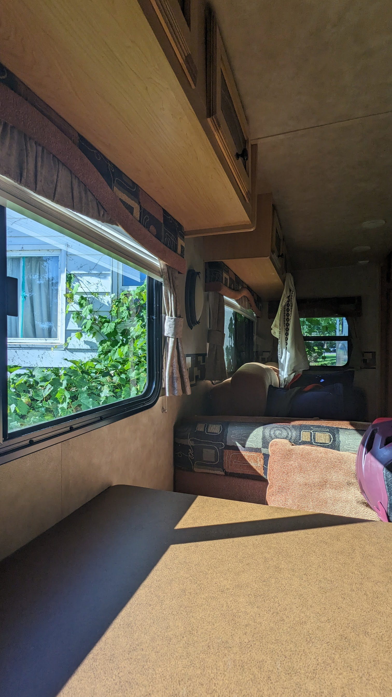
RV stay for the night
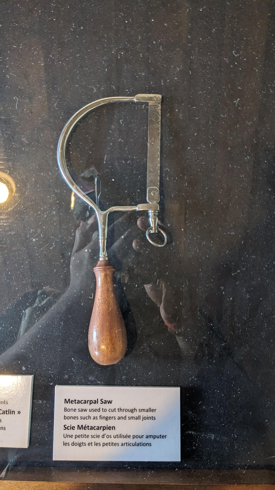
Metacarpal saw
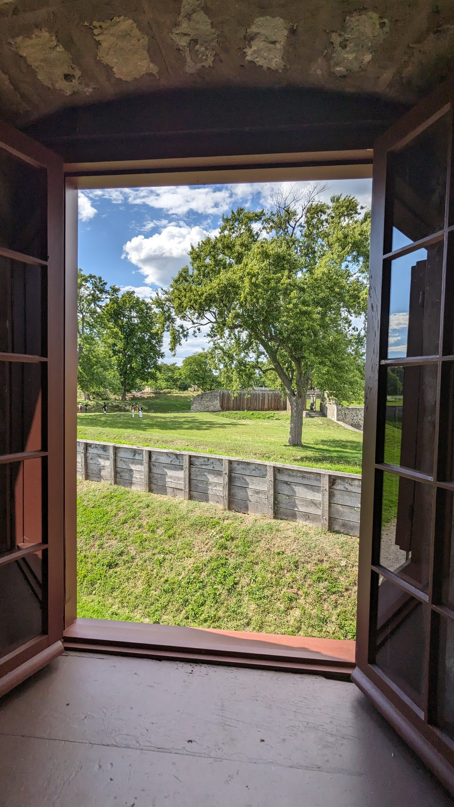
Sunny day
The rest of the trip
Fortunately or unfortunately, the best or worst part of the journey was done all in the beginning. The rest was admiring nature, having food, and biking till the end.
On the final day we visited Fort Erie, thanks to Harman's superior planning skills, and got to see some musketeers in action. It was fun to know about the life of soldiers during those times — how they had porridge almost every day, their tea came from leaves that had been boiled 20 times over, and how they had to wait almost a minute to load their rifles to fire a second time. Basically, life was not easy.
We ended the trip at Niagara Falls. Strava did not say 400 km till then because it did not record 20 km somewhere in between. So, we went up and down along the river to increase it to the desired rounded-off number. In the end we rewarded ourselves with some sumptuous dinner and then took the train back to Toronto. No, we did not bike back from Niagara. We didn't want to torture ourselves that much.
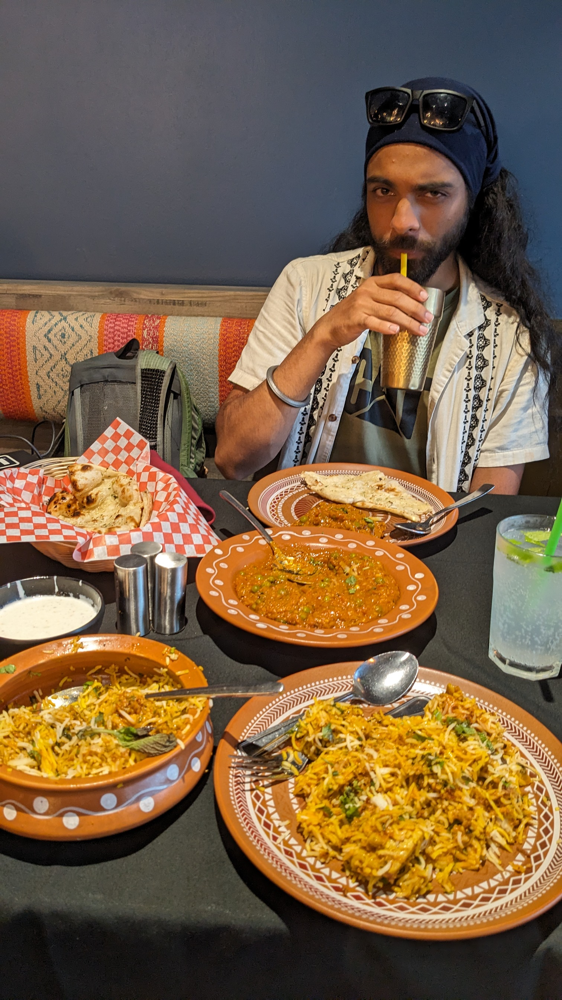
The reward
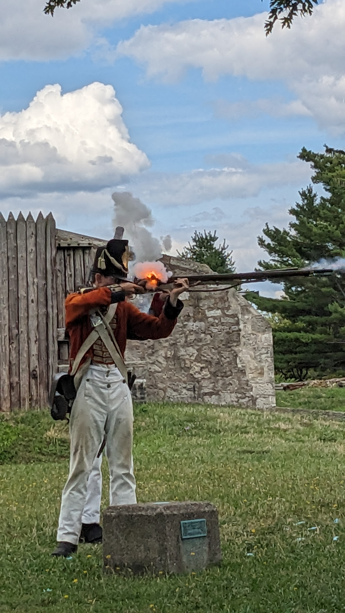
Musketeer in action
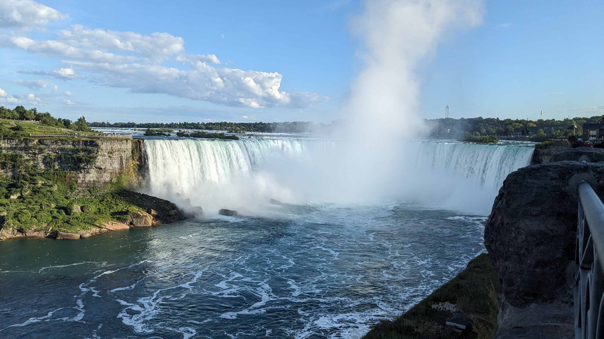
Reached Niagara via a roundabout route from Toronto
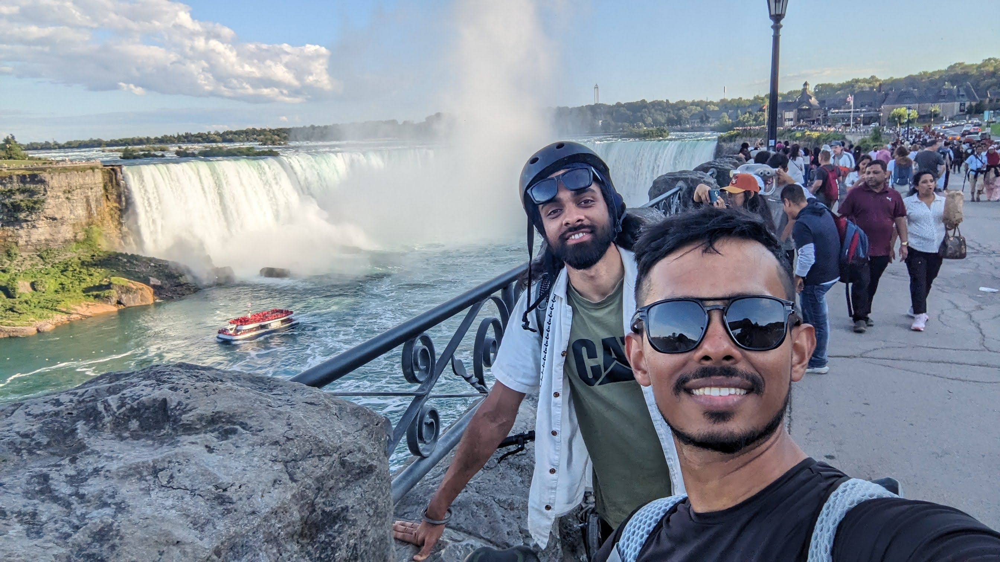
Selfie 102
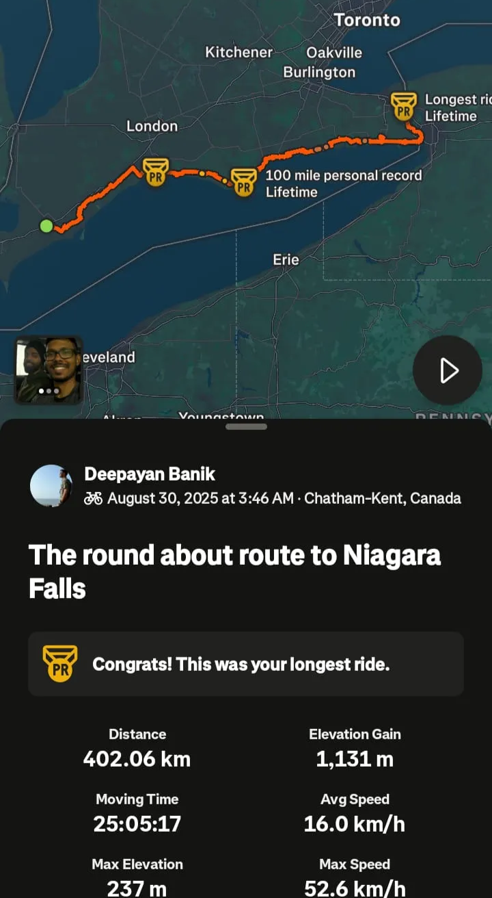
420 km, confirmed (well, mostly)